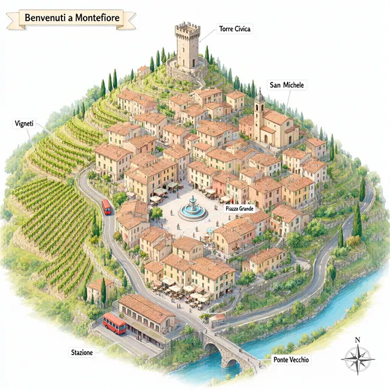
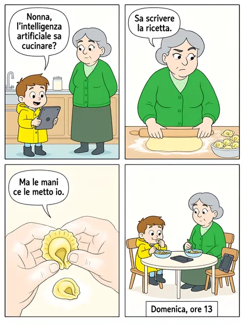
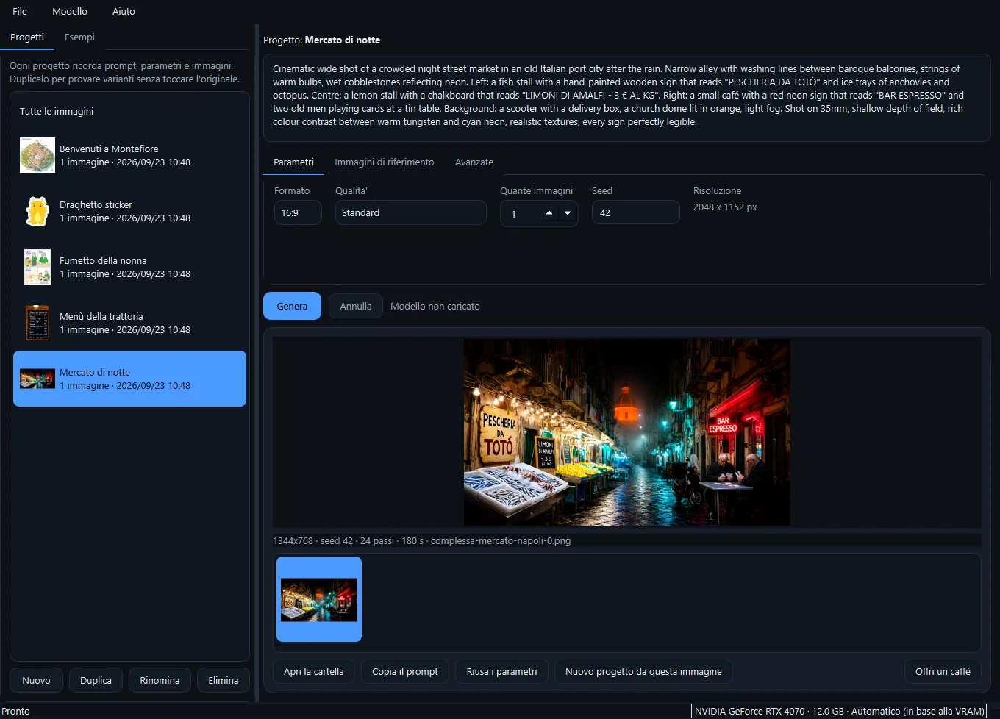
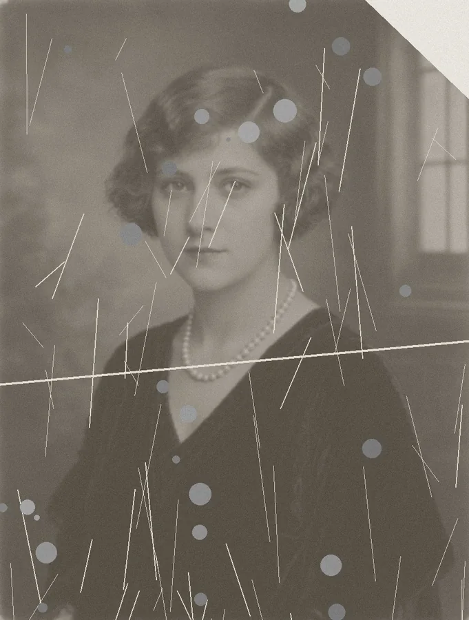
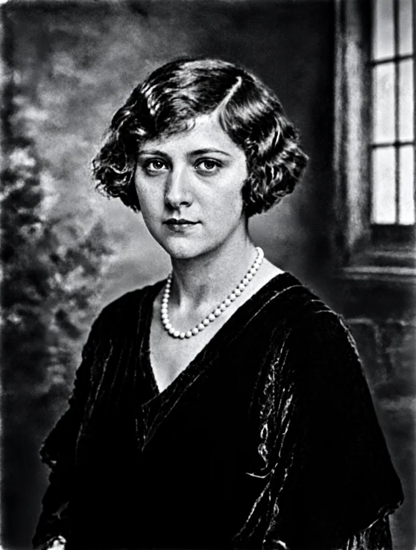
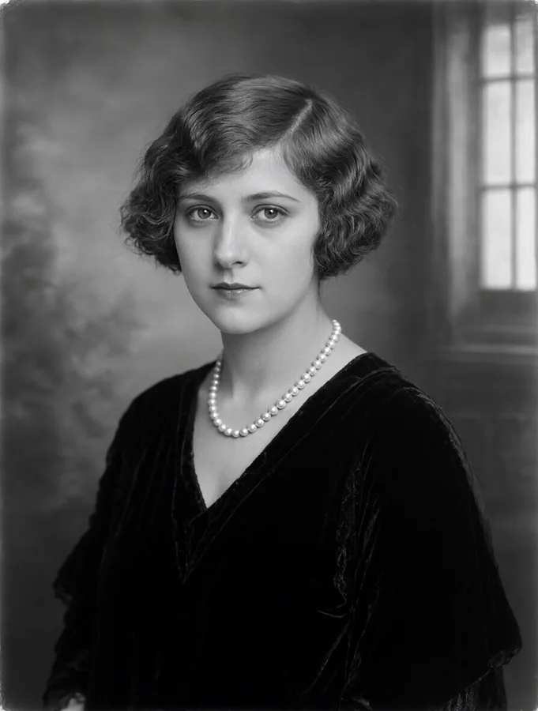
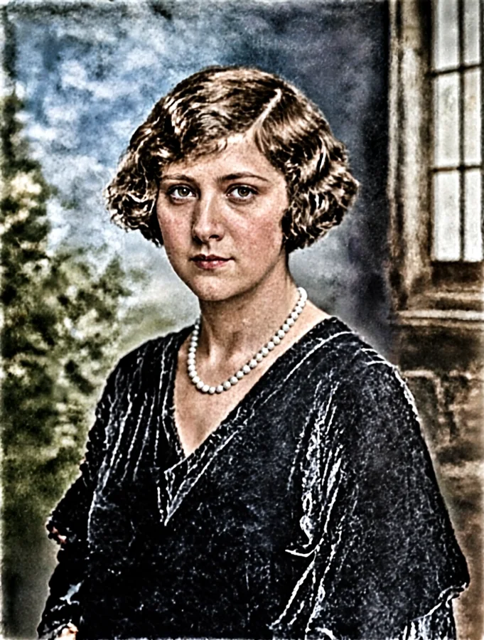
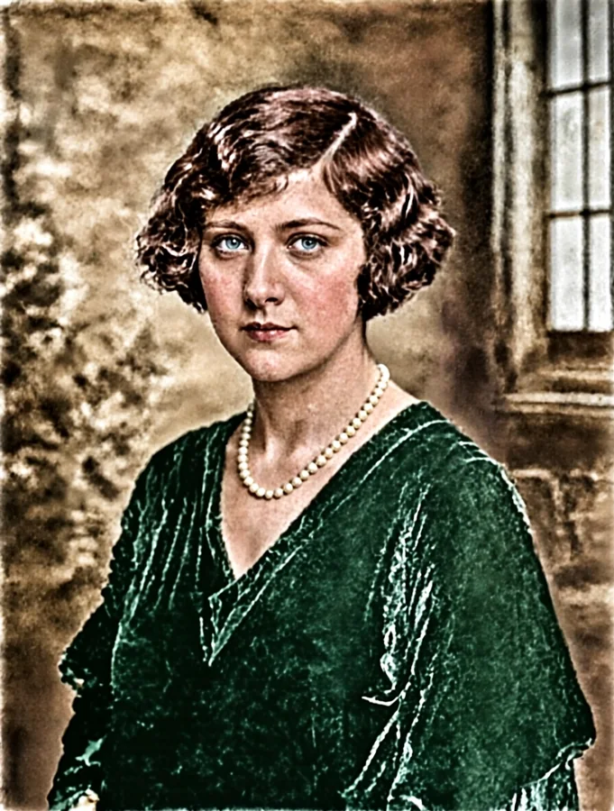

Immagini che nascono sul tuo computer
Image Creator Free porta Qwen-Image-2.1 su Windows: scrivi cosa vuoi vedere, restaura una foto di famiglia, prova dieci varianti di un'idea. Niente account, niente crediti, niente prompt che escono di casa.
- Gratis e open source (MIT)
- Windows 10/11
- NVIDIA da 8 GB
- Nessuna telemetria
- Si aggiorna da solo
Fatte con il programma, così come sono uscite
Gli esempi che trovi dentro l'applicazione, generati su una RTX 4070 da 12 GB con seed 42 e 24 passi. Nessun ritocco: il testo nelle immagini l'ha scritto il modello. Apri i prompt per vedere cosa gli è stato chiesto.
{kind=link}
Il prompt
A photo of a real chalkboard menu hanging on a brick wall in a cosy trattoria, hand-drawn in white and coloured chalk with small doodles of basil, tomatoes and a wine bottle. Title: "Menù del giorno". Section "Primi": "Tagliatelle al ragù - 12 €", "Risotto ai funghi porcini - 14 €". Section "Secondi": "Saltimbocca alla romana - 16 €", "Branzino al forno - 18 €". Section "Dolci": "Tiramisù della casa - 6 €". Bottom line: "Coperto 2 € · Acqua e pane inclusi". Chalk dust, slight smudges, warm light from a pendant lamp, every word readable and correctly aligned with its price.
{kind=link}
Il prompt
Cinematic wide shot of a crowded night street market in an old Italian port city after the rain. Narrow alley with washing lines between baroque balconies, strings of warm bulbs, wet cobblestones reflecting neon. Left: a fish stall with a hand-painted wooden sign that reads "PESCHERIA DA TOTÒ" and ice trays of anchovies and octopus. Centre: a lemon stall with a chalkboard that reads "LIMONI DI AMALFI - 3 € AL KG". Right: a small café with a red neon sign that reads "BAR ESPRESSO" and two old men playing cards at a tin table. Background: a scooter with a delivery box, a church dome lit in orange, light fog. Shot on 35mm, shallow depth of field, rich colour contrast between warm tungsten and cyan neon, realistic textures, every sign perfectly legible.
{kind=link}

Il prompt
Detailed isometric illustration of a small Italian hill village seen from above at a 30-degree angle, soft pastel colours and crisp shading like a high-end tourism map. A medieval tower on the hilltop labelled "Torre Civica", a piazza with a fountain labelled "Piazza Grande", a church labelled "San Michele", vineyards on terraced slopes labelled "Vigneti", a winding road with a small red bus, a train station at the bottom labelled "Stazione", and a river with a stone bridge labelled "Ponte Vecchio". Tiny people, cafés with umbrellas, cypress trees, clean white labels with thin leader lines, a compass rose in the corner and a title banner "Benvenuti a Montefiore".
{kind=link}

Il prompt
A four-panel comic strip in a 2x2 grid with thin black borders and white gutters, European ligne claire style, flat colours. The same two characters in every panel: a tall grey-haired grandmother in a green cardigan and a small boy in a yellow raincoat. Panel 1: kitchen, the boy holds a tablet, speech bubble "Nonna, l'intelligenza artificiale sa cucinare?". Panel 2: the grandmother raises an eyebrow while rolling pasta dough, bubble "Sa scrivere la ricetta.". Panel 3: close-up of her floury hands shaping tortellini, bubble "Ma le mani ce le metto io.". Panel 4: both at the table eating, the tablet forgotten on a chair, caption box at the bottom "Domenica, ore 13". Consistent faces and clothes across panels, clear readable lettering in the bubbles.
{kind=link}
Il prompt
This is an RGBA image with transparency. A cute cartoon dragon sticker. The image has alpha channel and the background is transparent.
Un'idea, dieci varianti, nessuna persa
Ogni cosa che generi appartiene a un progetto, con il suo prompt, i suoi parametri, le immagini di riferimento e tutti i risultati in una cartella sua.
- Duplica un progetto e cambia quello che vuoi: formato, passi, prompt. L'originale resta com'era.
- Riparti da un'immagine riuscita con il suo seed, per fare varianti che restano vicine.
- I tuoi prompt tornano tra gli esempi, pronti da riusare.
- Ogni PNG porta dentro prompt, seed e parametri: niente si perde.

Le foto di famiglia, di nuovo nitide
Graffi, pieghe, macchie, angoli strappati, volti sbiaditi. Dai al programma la foto rovinata e, se le hai, altre foto della stessa persona: le usa solo come riferimento per ricostruire il volto dove l'originale non c'è più. Puoi restare in bianco e nero o colorare.



Nella demo il ritratto è inventato: generato dal modello, poi rovinato apposta, poi restaurato con l'esempio «Restauro B/N di una sola foto». Nessuna persona reale.
E poi, se vuoi, a colori
La foto non cambia: si aggiunge solo il colore. Lascia scegliere al modello colori plausibili per l'epoca, scrivi tu quelli che ricordi — occhi, capelli, abito, sfondo — oppure dagli una foto a colori della stessa persona da cui prenderli.


Tutto quello che serve, niente di più
Scrive davvero le parole
Insegne, menù, copertine, fumetti: metti il testo tra virgolette e lo trovi nell'immagine, scritto giusto.
Sfondo trasparente
PNG con canale alpha nativo: sticker e loghi già ritagliati.
Fino a 10 riferimenti
Trascina le tue foto e citale nel prompt: cambia uno sfondo, monta una foto di gruppo, vesti un modello.
Oltre 60 esempi
Quelli ufficiali di Qwen, scene complesse, restauro e colorazione di foto, e i prompt che hai già usato.
Sette formati
Da 1:1 a 16:9 e 9:16, fino a 2048 pixel, con tre livelli di qualità.
Si aggiorna da solo
All'avvio controlla la versione, mostra le novità e installa l'aggiornamento, verificato con SHA-256.
Tutto in locale
Il modello gira sulla tua scheda video; prompt e immagini restano sul disco.
Pensa alla memoria
Sceglie da solo come usare VRAM e RAM, e avvisa prima se una risoluzione o il caricamento non ci stanno.
Tempi veri, misurati
RTX 4070 da 12 GB, 48 GB di RAM, modello su SSD. Con più VRAM il modello resta tutto sulla scheda ed è molto più veloce.
| Caricamento del modello | circa 40 secondi, una volta per sessione |
|---|---|
| Menù su lavagna con prezzi, 832x1248, 24 passi | 3 min 21 s — 8.4 s per passo |
| Mercato notturno con insegne scritte, 1344x768, 24 passi | 3 min 00 s — 7.5 s per passo |
| 1024x1024, 20 passi | 3 minuti — 9,1 s per passo |
| 1536x1536, 30 passi | 8 minuti e mezzo — 17,2 s per passo |
| 2048x2048, 40 passi | fuori portata con 12 GB di VRAM: servono almeno 16 GB |
Cosa serve
| Scheda video | NVIDIA da 8 GB di VRAM in su. Sotto i 20 GB il modello resta in RAM e passa sulla scheda un pezzo alla volta: funziona, ma è più lento. |
|---|---|
| Memoria | Il caricamento chiede circa 35 GB tra RAM e file di paging: con 32 GB di RAM conviene un file di paging generoso. Il programma avvisa prima di iniziare se non bastano. |
| Disco | 3 GB per l'ambiente di calcolo e 33 GB per il modello, meglio su SSD: da un disco meccanico il caricamento passa da 40 secondi a un'ora. |
| Rete | Solo per i download iniziali e per controllare gli aggiornamenti. |
| Windows | 10 o 11 a 64 bit. Python non serve: se manca, il programma ne prepara una copia sua senza toccare quello che hai. |
Tre passi, poi fa tutto da solo
Scarica l'installer
Un file da 45 MB. Windows SmartScreen avvisa perché non è firmato: Ulteriori informazioni → Esegui comunque.
Primo avvio
Prepara l'ambiente di calcolo (PyTorch e diffusers, circa 3 GB) e ti fa scegliere dove tenere il modello.
Prima generazione
Scarica il modello da Hugging Face (33 GB, una volta sola) e poi genera. Da lì funziona anche offline.
Dai sorgenti:
git clone https://github.com/bdbais/image-creator-free
cd image-creator-free
pip install -r requirements.txt
python ImageCreatorFree.pywQuello che fai resta tuo
Nessun account, nessuna telemetria, nessun server di mezzo. Il programma va in rete solo per scaricare modello e librerie la prima volta e per sapere se c'è una versione nuova.
Il modello Qwen-Image-2.1 è distribuito con la Qwen Research License: l'uso è consentito per ricerca e valutazione, non per scopi commerciali. Image Creator Free è open source (MIT) e non ridistribuisce il modello: lo scarichi tu, da Hugging Face.
Ti piace? Dimmelo
È gratuito e resterà così. Idee, errori e richieste sono benvenuti su GitHub; se ti fa risparmiare tempo, puoi offrire un caffè.